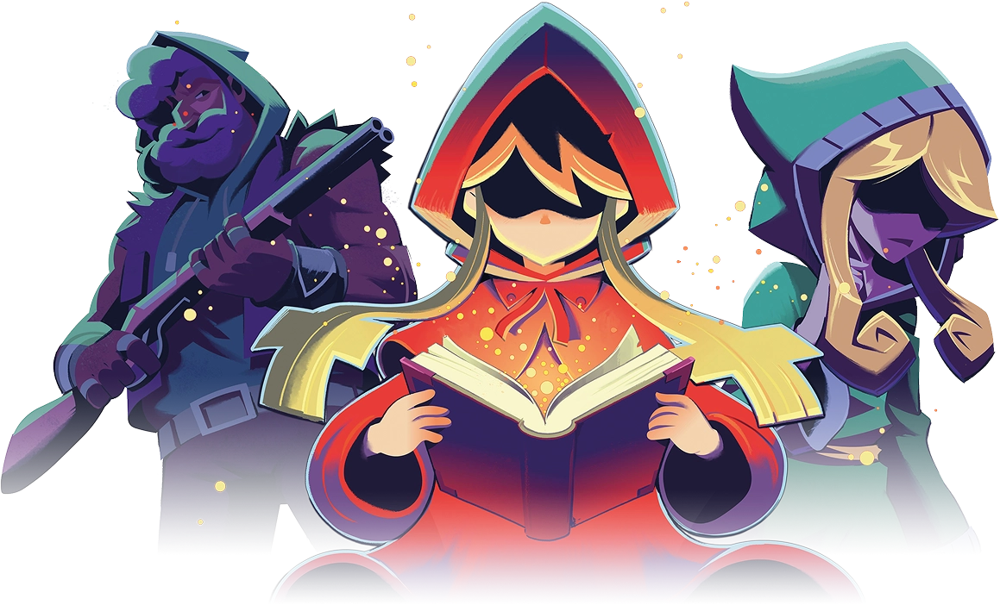
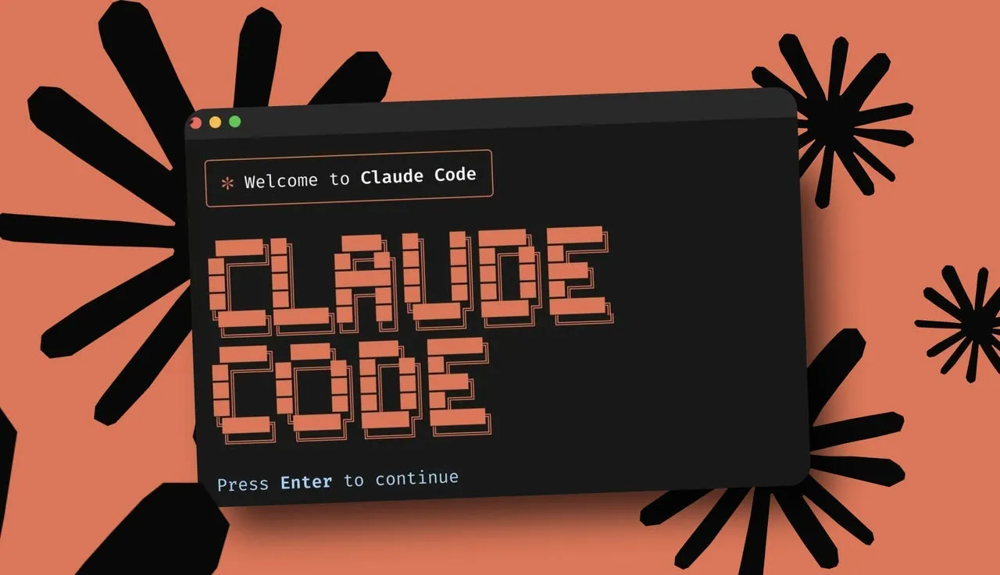

I miei Progetti

Tyranny of Ghost
CompletatoTempo di sviluppo: 3 mesi
Avventura singleplayer in 3D dove l'obiettivo è liberare un borgo infestato. Realizzato in tre mesi con un gruppo di 4 persone'.
Scarica
MultiAgentSystem
CompletatoTempo di sviluppo: 3 settimane
Pacchetto combinabile con Claude Code per l'ottimizzazione dei tempi di elaborazione: costi ridotti, efficienza e precisione, in un sistema con due agenti, un orchestratore e un controller.
ScaricaLanguage Detector
CompletatoTempo di sviluppo: 1 settimana
Applicazione web che rileva automaticamente la lingua di un testo tra cinque lingue (italiano, tedesco, inglese, francese, spagnolo), tramite un modello di Machine Learning (TF-IDF su n-grammi di caratteri + Naive Bayes) allenato da zero su un dataset Tatoeba, con il 99% di accuracy sul test set.
Scarica
Obsidian Brain
CompletatoTempo di sviluppo: 3 settimane
Sistema RAG locale e gratuito che risponde a domande basandosi esclusivamente sul contenuto di una vault Obsidian, rifiutando di rispondere quando l'informazione non è presente. Pipeline completa - parsing, chunking, embedding, retrieval, generazione via LLM locale (Ollama) - esposta tramite API FastAPI.
Scarica